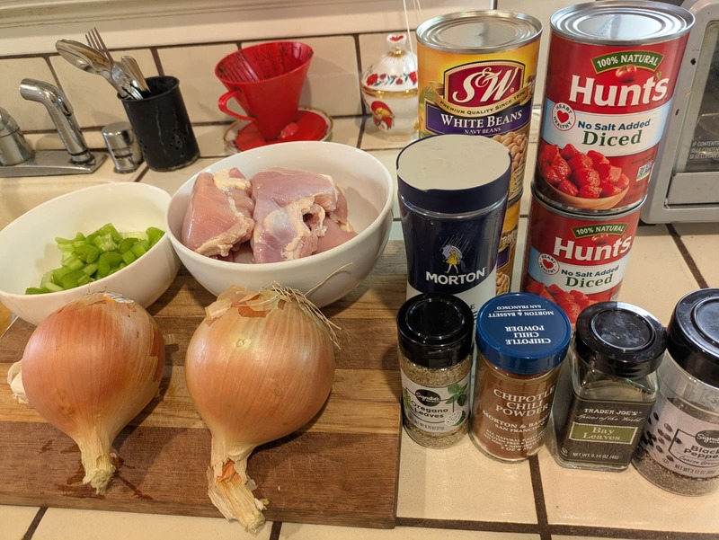
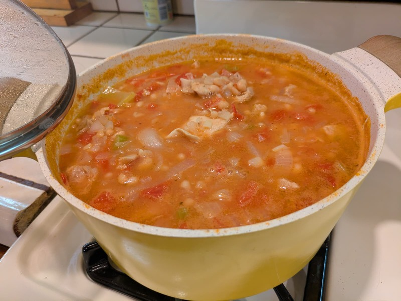

Chicken Chili with Beans
 
Summary
Prep time: 15 mins | Cook time: 4 hours | Servings: 6
Ingredients:
- 2 tablespoons extra-virgin olive oil
- 2 onions, chopped
- 4 garlic cloves, minced
- 2 celery stalks, chopped
- 2 teaspoons ground cumin
- 1 teaspoon salt
- 1 teaspoon chipotle powder
- 1⁄2 teaspoon freshly ground black pepper
- 4 boneless skinless chicken breasts, cut into 1-inch pieces
- 1 teaspoon dried oregano
- 1 bay leaf
- 1 (28-ounce) can chopped tomatoes
- 2 1⁄2 cups chicken broth, plus additional as needed
- 2 (15-ounce) cans white beans, drained and rinsed
- 1⁄4 cup chopped fresh parsley, divided
Instructions:
- Combine ingredients: In the slow cooker, combine everything except for teh parsley.
- Cook: Set the slow cooker to high and cook for 4 hours.
- Adjust consistency: If the mixture gets too thick, add a little more chicken broth or some water.
- Serve: Garnish each serving with parsley. Serve alone or over cooked brown rice or quinoa.
Nutritional Information (Per Serving):
- Calories: 423
- Total Fat: 13g
- Total Carbohydrates: 41g
- Sugar: 6g
- Fiber: 10g
- Protein: 42g
- Sodium: 857mg